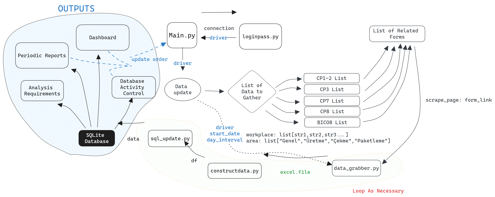

Database Activity Control System
Workflow diagram for data processing and analysis system.
Introduction
In the modern data-driven landscape, efficiency and automation are key. The Database Activity Control System is a testament to this principle. Designed for a dynamic environment, it is tailored to handle periodic reports, respond to analysis requirements dynamically, and present information via a comprehensive dashboard.
I have proposed a systematic and analytic approach, encapsulating a progressive timeline, segmented into three distinct phases:
Workflow Architecture
Data Collection and Management
- Automated Data Collection: Utilizes data_grabber.py to systematically gather required data, influenced by user-defined parameters such as start_date, day_interval, and area.
- Data Organization: Categorizes data sets into various lists (CP1-2, CP3, CP7, etc.), optimizing them for process-specific handling.
- Web Scraping Integration: Implements scrape_page functionality to extract data from web forms, broadening the data acquisition capabilities.
Processing and Database Interaction
- SQL Database Integration: Employs SQLite for local data storage, offering a reliable and agile database solution.
- Data Updating (sql_update.py): Manages database transactions, ensuring data integrity and consistency.
- Data Construction (constructdata.py): Refines raw data into structured formats, suitable for analysis and reporting.
Output Generation
- Reporting: Automated generation of periodic reports that encapsulate analytical insights.
- Dashboard Interface: Provides an interactive dashboard for real-time data visualization and control.
- Analysis Compliance: Meets diverse analysis requirements through a flexible output system.
Iterative and Scalable
The system is designed with scalability in mind, incorporating loops where necessary to facilitate recurring tasks without manual intervention. This allows for the system to adapt to increasing volumes of data and complexity of tasks.